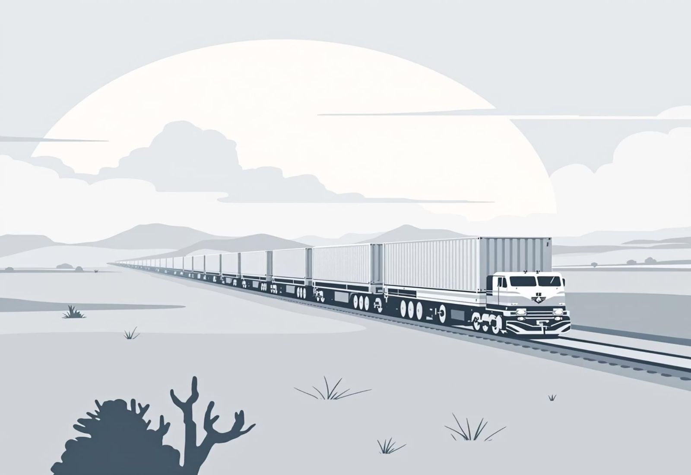
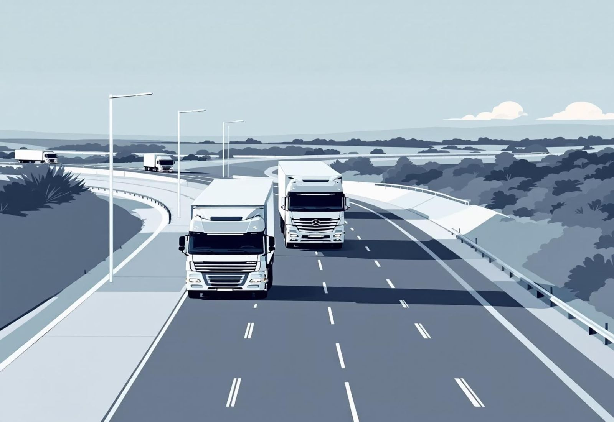

Mineral export logistics from Zambia to the coast
Zambia is landlocked, so every tonne needs inland transport, border clearance and port handling before it sails. We plan the whole inland leg and hand over at the port — or arrange the ocean leg too under CIF and CFR.
Rail to Dar es Salaam, road to Durban
We choose the route by commodity, volume and how fast you need it. Both connect the Copperbelt to deep-water ports with global shipping lines.

Dar es Salaam, Tanzania
Rail is a reliable and often cost-effective option for bulk commodities, linking Zambia directly to Tanzania's main port on the Indian Ocean.
- Transit time: about 10–14 days
- Best for bulk tonnage on a fixed schedule
- Strong onward routes to China, India and the Gulf
- Freight and port handling quoted per shipment

Durban, South Africa
Road gives more flexibility and speed, connecting to the deep-water port of Durban, a gateway to global shipping routes.
- Transit time: about 7–10 days
- Best for faster or smaller lots
- Border clearance arranged per truck
- Freight and port handling quoted per shipment
From the port to your country
Under FOB the ocean leg is the buyer's responsibility. To help you plan, here are typical transit times from our ports to major destinations.
| Route | Vessel type | Transit time |
|---|---|---|
| Dar es Salaam → China | Bulk / container | 25 – 30 days |
| Durban → China | Bulk / container | 20 – 25 days |
| Dar es Salaam → India (Mundra) | Bulk / container | 15 – 20 days |
| Durban → India (Mumbai) | Bulk / container | 12 – 18 days |
Estimates only — final costs and times depend on carrier rates and market conditions. For bulk we recommend Panamax, Supramax or Handymax vessels; for high-value or smaller lots, 40 ft containers.
Bonded warehousing in Zambia
To keep transactions and logistics flexible, JIT Mining gives buyers access to bonded warehouses in key hubs. Your commodities stay safe and intact until they are cleared for export.
Lusaka
Ndola
Kitwe
Storage is free for an initial period, then charged at a competitive rate per tonne per week.
Weighbridge & sampling
Accurate weighing and quality sampling when cargo enters and leaves.
24/7 security
Surveillance and on-site personnel guarding your stock day and night.
Loading & unloading
Efficient cargo handling to keep trucks and wagons moving.
What our logistics service covers
From the mine gate or warehouse to the vessel.
Inland transport
Rail and road haulage from the Copperbelt to Dar es Salaam or Durban.
Export clearance
Export permits, origin documents and border paperwork.
Pre-shipment inspection
SGS or Bureau Veritas inspection at the loading point.
Port & ocean
Port handling, and the ocean leg when you buy CIF or CFR.
Transport & shipping questions
How are minerals moved from Zambia to the port?
By rail to Dar es Salaam (about 10–14 days) or by road to Durban (about 7–10 days). We choose the route with you based on volume, urgency and cost.
Which Incoterms do you support?
FOB is our standard. CIF and CFR can be arranged, with pricing confirmed for your destination port.
Who pays for ocean freight?
Under FOB, the buyer arranges and pays for ocean freight from the port. Under CIF or CFR we arrange it and include it in the price.
Can my cargo be stored before shipping?
Yes — in bonded warehouses in Lusaka, Ndola or Kitwe, with weighbridge, sampling, loading services and 24/7 security.
Where is the cargo inspected?
At the loading point in Zambia, by SGS or an equivalent international agency, before it leaves for the port. JIT Mining pays for the inspection.
Plan an inspected, well-documented shipment
Tell us the commodity, tonnage and destination port and we will put together a transport plan.